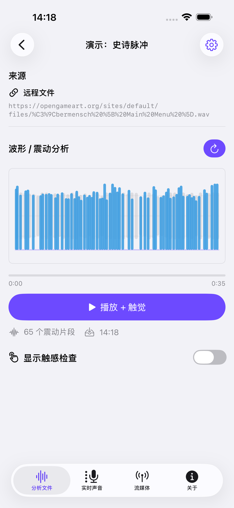
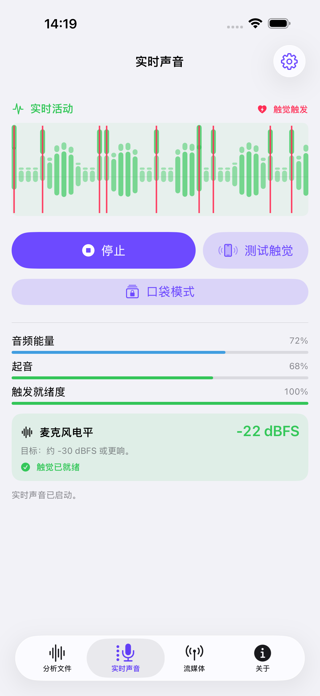
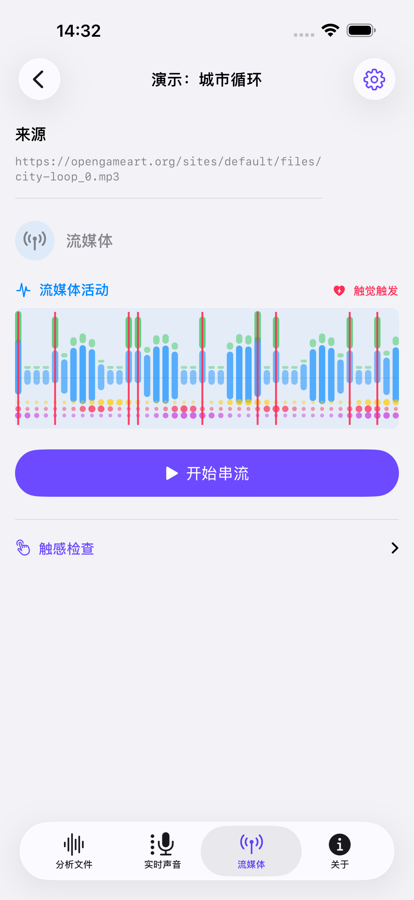
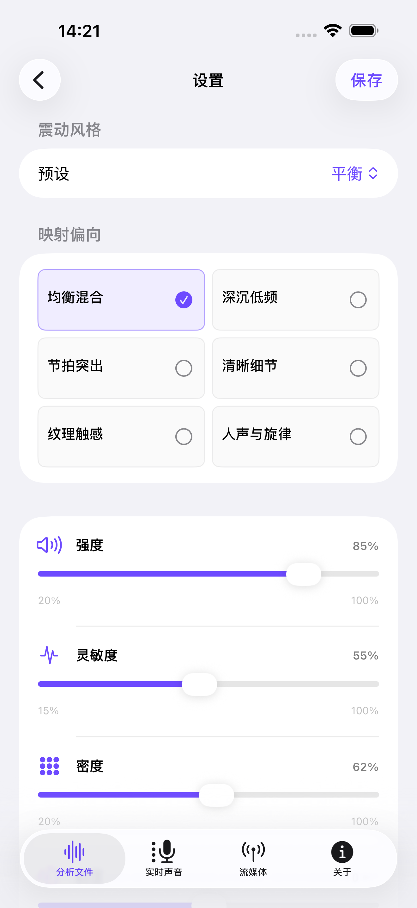

01
音訊與影片檔案
匯入檔案，或試試內建示範。分析一次、儲存結果，隨時重播與聲音同步的觸覺節奏。


不只聽見節拍，也能觸到節奏。
用 iPhone 震動感受節拍與低音。先試四首內建示範，再體驗六種觸覺預設、本機音訊與影片分析、麥克風即時聲音及相容串流直連。
匯入檔案，或試試內建示範。分析一次、儲存結果，隨時重播與聲音同步的觸覺節奏。

透過麥克風擷取附近的音樂與聲音，將能量變化化為即時觸覺脈衝。

播放相容的直接音訊或影片連結，邊聽邊感受節奏。HLS 目前僅支援播放。

App 畫面以簡體中文展示；即時聲音與串流活動使用示範資料。
選擇深沉低頻、節拍突出等預設，再調整強度、靈敏度與密度，找出合適的節奏感。已儲存的分析結果會保留各自的設定。

觸覺播放需要相容的 iPhone。可先體驗內建示範，並用「測試觸覺」確認裝置上的實際感受。
完整的本機音訊或影片可供分析，已儲存的結果可離線重播；即時聲音使用經授權的麥克風；相容的音訊、影片直連可在連網播放時驅動觸覺。HLS 僅支援播放，不支援即時觸覺分析；不支援受保護的音樂服務串流。
TactiBeat 不是醫療裝置，不能取代助聽器、人工電子耳、臨床照護或專業建議。
可以。App 內建四首 CC0 示範音訊，開啟示範、點選「分析」，即可在相容的 iPhone 上播放產生的觸覺節奏。示範音訊不必另外下載。
完整的本機音訊或影片可供分析，已儲存的結果可離線重播；即時聲音使用經授權的麥克風；相容的音訊、影片直連可在連網播放時驅動觸覺。HLS 僅支援播放，不支援即時觸覺分析；不支援受保護的音樂服務串流。
觸覺輸出需要支援觸覺硬體的 iPhone，可先以「測試觸覺」檢查。即時聲音模式也須允許麥克風存取；聲音太小時，可靠近聲源並調整靈敏度。支援 iPad 介面不表示具備同等震動硬體。實際效果會隨裝置、素材與設定改變。
不可以。即時聲音透過麥克風聽取附近的聲音，並非系統內部音訊擷取。若要在 TactiBeat 內播放並產生觸覺，請使用自己的檔案或相容的媒體直連。
不會。已儲存的分析保留各自的設定。檔案分析、即時聲音與串流頁面皆可進入「設定」修改預設參數；若要改變既有檔案結果，請點選「重新產生」，確認並儲存設定後重新分析。
手機震動無法準確保留音高、歌詞或音色。TactiBeat 聚焦於時序、脈衝與節奏感，並非醫療裝置，不能取代助聽器、人工耳蝸、臨床照護或專業建議。